12 线性回归
线性模型用于解释一个连续因变量和一个或多个自变量之间的线性关系。模型形式一般为：
\[ Y=X\beta + \epsilon \]
其中， Y 是因变量，X 是自变量矩阵，β 是回归系数，ϵ 是误差项。

Show the code
advertising<-read_csv("data/Advertising.csv")
p_sales<-function(x){
ggplot(advertising,aes({{x}},sales))+
geom_point(shape=21,color="red")+
geom_smooth(formula = 'y ~ x',method = "lm",se=FALSE)
}
p_sales(TV)|p_sales(radio)|p_sales(newspaper)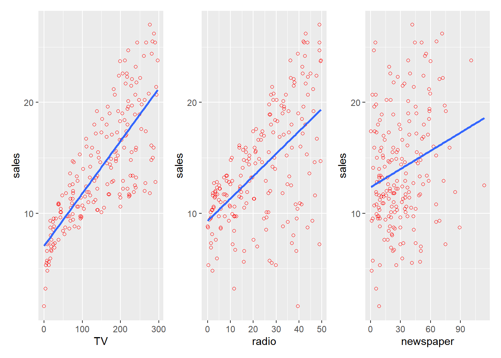
12.1 一元线性回归
linear regression model：
\[ Y_i=\beta_0+ \beta_1 X_i+\epsilon_i,其中\epsilon_i\sim N(0,\sigma^2) \]
Show the code
#linear model specification 线性模型规范
lm_spec <-linear_reg() %>%
set_mode("regression") %>%
set_engine("lm")
lm_spec
#> Linear Regression Model Specification (regression)
#>
#> Computational engine: lmShow the code
lm_tv <- lm_spec %>% fit(sales ~ TV, data = advertising)
# 模型摘要
summary(lm_tv$fit)
#>
#> Call:
#> stats::lm(formula = sales ~ TV, data = data)
#>
#> Residuals:
#> Min 1Q Median 3Q Max
#> -8.3860 -1.9545 -0.1913 2.0671 7.2124
#>
#> Coefficients:
#> Estimate Std. Error t value Pr(>|t|)
#> (Intercept) 7.032594 0.457843 15.36 <2e-16 ***
#> TV 0.047537 0.002691 17.67 <2e-16 ***
#> ---
#> Signif. codes: 0 '***' 0.001 '**' 0.01 '*' 0.05 '.' 0.1 ' ' 1
#>
#> Residual standard error: 3.259 on 198 degrees of freedom
#> Multiple R-squared: 0.6119, Adjusted R-squared: 0.6099
#> F-statistic: 312.1 on 1 and 198 DF, p-value: < 2.2e-16
# 参数估计值、标准误、统计量、p值
broom::tidy(lm_tv, conf.int=T)
#> # A tibble: 2 × 7
#> term estimate std.error statistic p.value conf.low conf.high
#> <chr> <dbl> <dbl> <dbl> <dbl> <dbl> <dbl>
#> 1 (Intercept) 7.03 0.458 15.4 1.41e-35 6.13 7.94
#> 2 TV 0.0475 0.00269 17.7 1.47e-42 0.0422 0.0528
# 模型统计信息
broom::glance(lm_tv)
#> # A tibble: 1 × 12
#> r.squared adj.r.squared sigma statistic p.value df logLik AIC BIC
#> <dbl> <dbl> <dbl> <dbl> <dbl> <dbl> <dbl> <dbl> <dbl>
#> 1 0.612 0.610 3.26 312. 1.47e-42 1 -519. 1044. 1054.
#> # ℹ 3 more variables: deviance <dbl>, df.residual <int>, nobs <int>12.1.1 点须图
Show the code
# 整理回归模型结果
tidy_lm <- tidy(lm_tv, conf.int=T) %>% dplyr::filter(term !='(Intercept)' )
# 绘制点须图
ggplot(tidy_lm, aes(x = estimate, y = term)) +
geom_point(size = 2, color = "black") + # 绘制点
geom_errorbarh(aes(xmin = conf.low,
xmax = conf.high),
height = 0, color = "black") + # 绘制误差线
geom_vline(xintercept = 0, colour = "grey50", linetype = 2) + # 绘制参考线
labs(x = NULL, y = NULL) 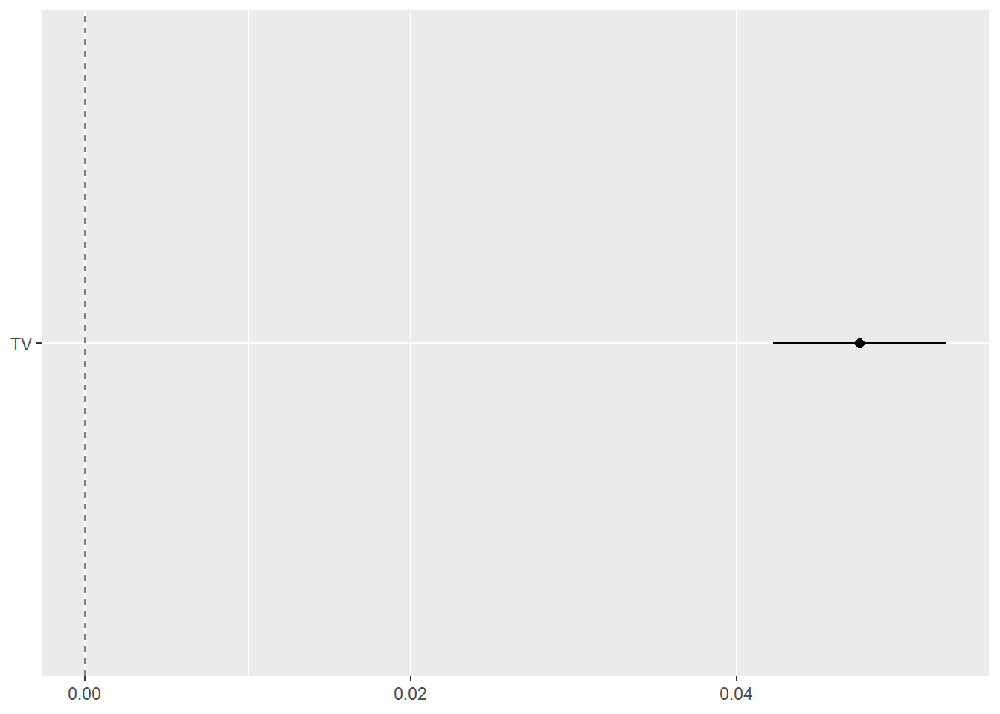
12.1.2 预测
Show the code
# 预测
stats::predict(lm_tv, new_data = advertising) %>%
head(n = 10)
#> # A tibble: 10 × 1
#> .pred
#> <dbl>
#> 1 18.0
#> 2 9.15
#> 3 7.85
#> 4 14.2
#> 5 15.6
#> 6 7.45
#> 7 9.77
#> 8 12.7
#> 9 7.44
#> 10 16.5
# 置信区间 平均响应值 取决于方差和样本量 随样本量增加收缩
predict(lm_tv, new_data = advertising, type = "conf_int") %>%
head(n = 10)
#> # A tibble: 10 × 2
#> .pred_lower .pred_upper
#> <dbl> <dbl>
#> 1 17.3 18.6
#> 2 8.44 9.86
#> 3 7.02 8.68
#> 4 13.8 14.7
#> 5 15.1 16.1
#> 6 6.58 8.31
#> 7 9.11 10.4
#> 8 12.3 13.2
#> 9 6.58 8.31
#> 10 16.0 17.1
# 单个新观测值 主要取决于方差
predict(lm_tv, new_data = advertising, type = "pred_int") %>%
head(n = 10)
#> # A tibble: 10 × 2
#> .pred_lower .pred_upper
#> <dbl> <dbl>
#> 1 11.5 24.4
#> 2 2.68 15.6
#> 3 1.37 14.3
#> 4 7.79 20.7
#> 5 9.18 22.1
#> 6 0.962 13.9
#> 7 3.31 16.2
#> 8 6.30 19.2
#> 9 0.957 13.9
#> 10 10.1 23.0
# 比较观测值与预测值
augment(lm_tv, new_data = advertising) %>%
select(sales, .pred) %>%
head(n = 10)
#> # A tibble: 10 × 2
#> sales .pred
#> <dbl> <dbl>
#> 1 22.1 18.0
#> 2 10.4 9.15
#> 3 9.3 7.85
#> 4 18.5 14.2
#> 5 12.9 15.6
#> 6 7.2 7.45
#> 7 11.8 9.77
#> 8 13.2 12.7
#> 9 4.8 7.44
#> 10 10.6 16.5predict(lm_tv$fit, new_data = advertising, interval = "confidence") %>%
head(n = 10)
predict(lm_tv$fit, new_data = advertising, interval = "prediction") %>%
head(n = 10)12.2 模型假设
一般线性模型中，其自变量全部为固定效应自变量，4点假设：
因变量 Y 为连续型数值变量
线性
保证各实测点到回归直线的纵向距离的平方和最小，即使得残差平方和最小。
\[ Q=\sum (Y-\hat Y)^2 \]
Show the code
# 可视化
augment(lm_tv, new_data = advertising) %>%
ggplot(aes(x = TV)) +
geom_linerange(aes(ymin = sales, ymax = .pred)) +
geom_point(aes(y = sales), color = "red") +
geom_abline(
intercept = coef(lm_tv$fit)[1],
slope = coef(lm_tv$fit)[2],
color = "blue",
linewidth = 1
)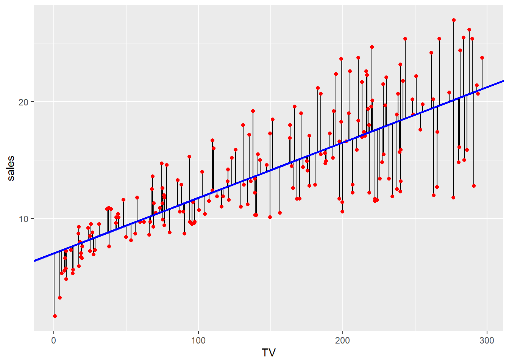
残差的正态性 \(\epsilon\sim N(0,\sigma^2)\)
方差齐性 \(Var(ε_i )=σ^2\)
残差的独立性
12.3 模型诊断
Show the code
autoplot(lm_tv, which = 1:6, ncol = 2, label.size = 3)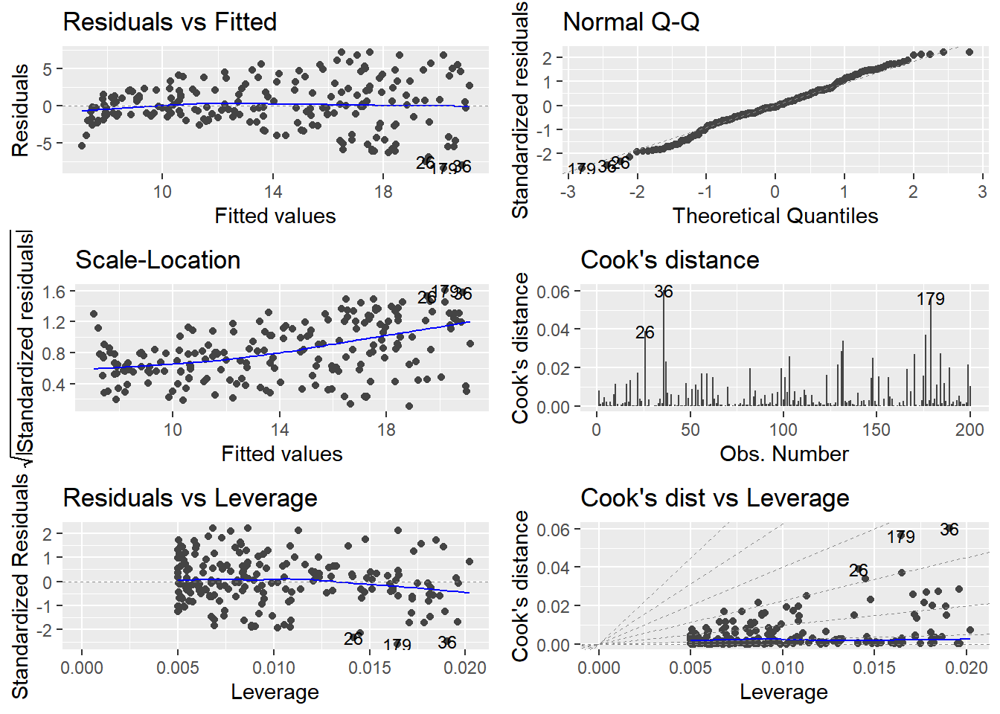
12.3.1 残差图
预测值与残差的关系，线性度，同方差
Show the code
# 检查线性回归模型的残差是否与预测值无关，即残差的分布是否随机。
# 残差应该随机分布在0附近
tibble(
`Fitted values`=fitted(lm_tv$fit),
Residuals = residuals(lm_tv$fit)
) %>% ggplot(aes(x = `Fitted values` , y = Residuals)) +
geom_point(pch=21) +
geom_smooth(formula = "y~x",color="red",lwd=0.5)+
geom_hline(yintercept = 0,lty=2) +
labs(x = "Fitted Values", y = "Residuals")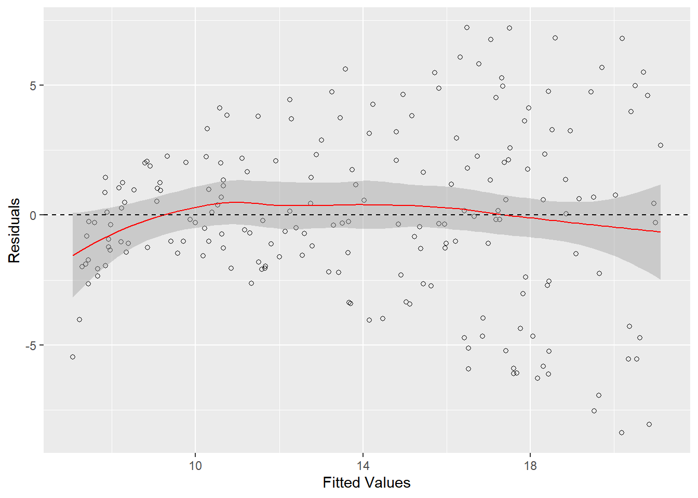
12.3.2 Q-Q图
标准化残差正态性
12.3.3 Scale-Location 图
检查同方差性，如果看到漏斗形（残差随着拟合值增大而增大），则可能存在异方差性问题。
标准化残差平方根图
检查残差的正态性，如果看到残差的分布围绕 0 随机散布，没有明显的模式，模型拟合是理想的。
Show the code
plot(lm_tv$fit, which = 3)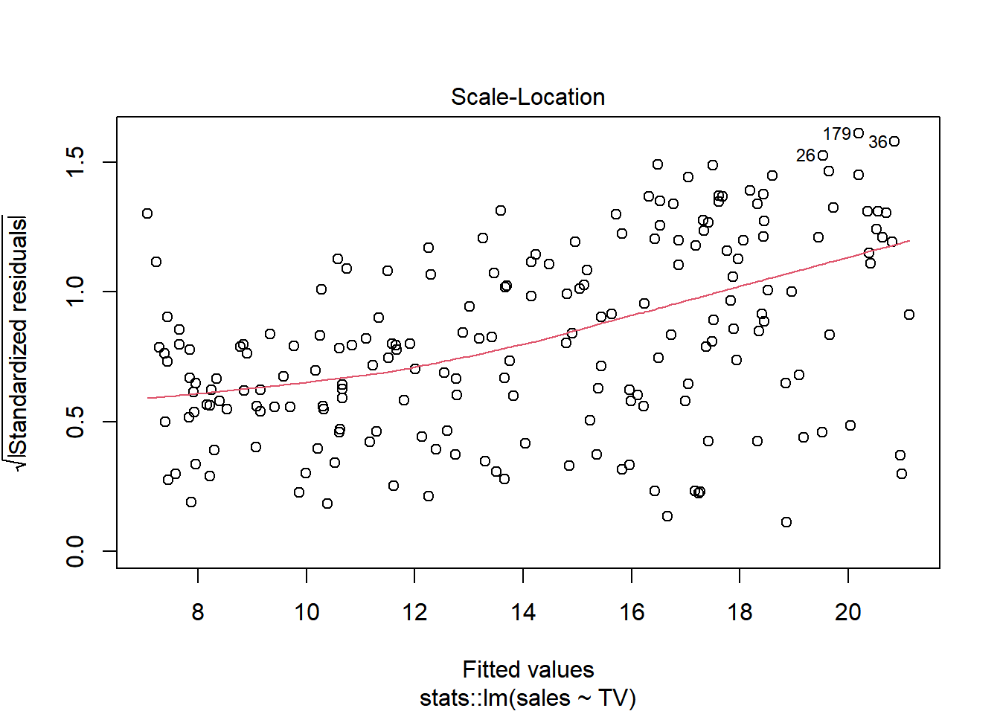
Show the code
# 绘制 Scale-Location 图
tibble(
fitted_values=fitted(lm_tv$fit),
StandardizedResiduals = rstudent(lm_tv$fit) ,
) %>%
ggplot(aes(x = fitted_values, y = sqrt(abs(StandardizedResiduals)))) +
geom_point(pch=21) +
geom_smooth(color="red",lwd=0.5)+
labs(title = "Scale-Location Plot",x = "Fitted Values", y = "√|Standardized residuals|")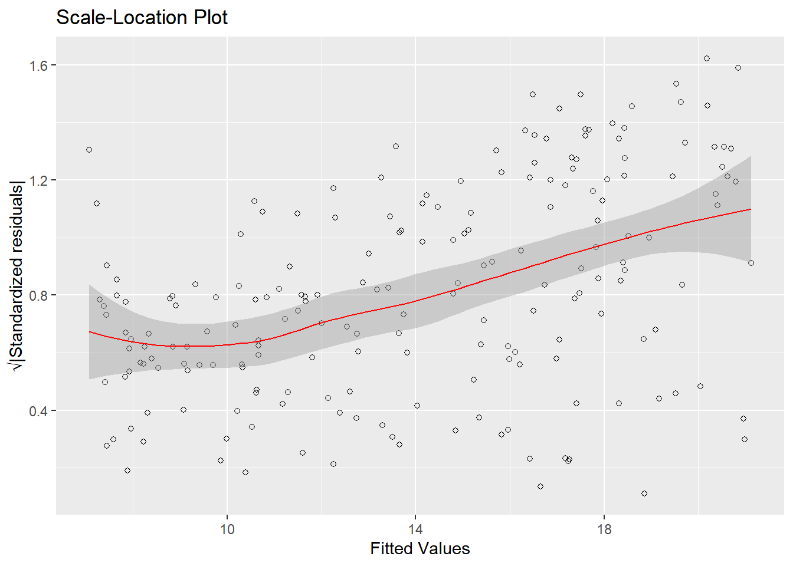
12.3.4 Cook’s距离

Show the code
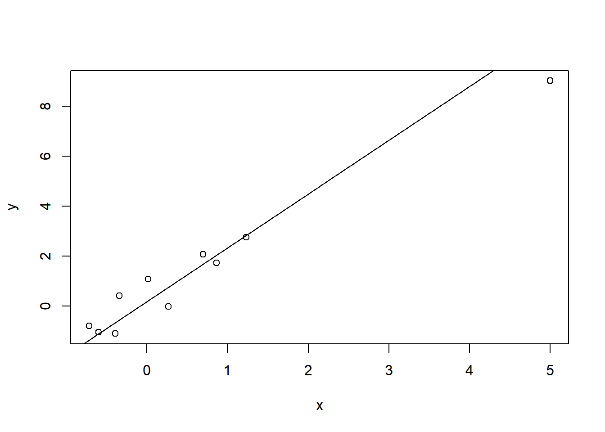
Show the code
influence.measures(lmodel)
#> Influence measures of
#> lm(formula = y ~ x) :
#>
#> dfb.1_ dfb.x dffit cov.r cook.d hat inf
#> 1 -0.0724 -0.0137 -0.0837 1.431 0.00397 0.103
#> 2 -0.2607 0.1637 -0.2717 1.388 0.03993 0.157
#> 3 0.0822 -0.0555 0.0869 1.554 0.00430 0.169
#> 4 0.2679 0.0174 0.2935 1.178 0.04433 0.100
#> 5 0.1102 0.0548 0.1490 1.408 0.01238 0.116
#> 6 -0.5785 0.1207 -0.5854 0.724 0.13792 0.104
#> 7 0.4851 -0.1676 0.4851 0.925 0.10651 0.114
#> 8 -0.6059 0.3277 -0.6179 0.848 0.16313 0.139
#> 9 0.4957 -0.2572 0.5034 0.996 0.11760 0.135
#> 10 0.0157 -1.0428 -1.1090 9.033 0.68380 0.863 *Show the code
plot(lm_tv$fit,4) 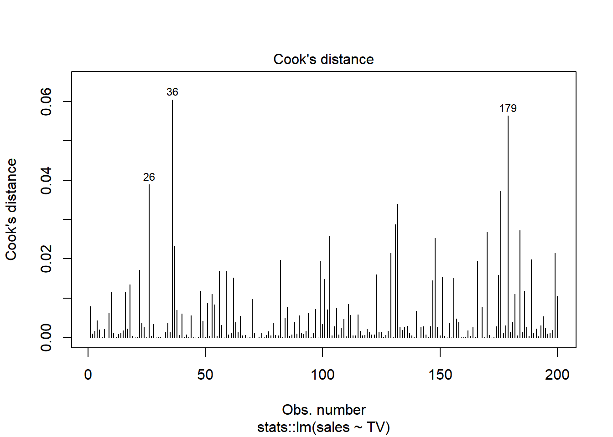
Show the code
threshold <- 4 / (nrow(advertising)-length(lm_tv$fit$coefficients)-2)
tibble(
x = 1:nrow(advertising),
cooks_distance = cooks.distance(lm_tv$fit),
label = factor(if_else(cooks_distance>threshold,x,NA))
) %>%
ggplot() +
geom_segment(aes(
x = x,
xend = x,
y = 0,
yend = cooks_distance ,
)) +
geom_text(aes(
x = x,
y =cooks_distance ,
label =label,
), vjust = -0.2) +
labs(x = "Observation Index", y = "Cook's Distance")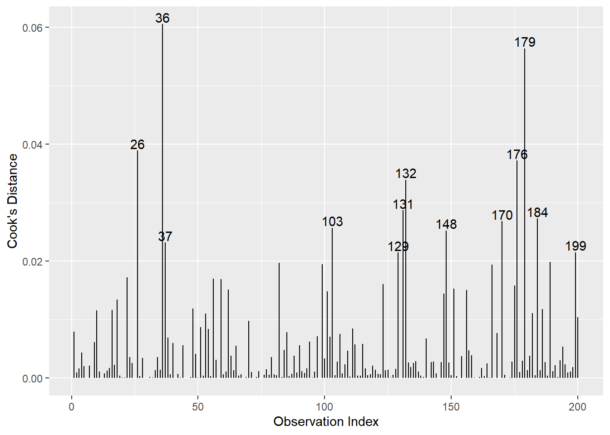
12.3.5 残差-杠杆值图

Show the code
influence(lmodel)$hat #leverage
#> 1 2 3 4 5 6 7 8
#> 0.1027407 0.1570337 0.1686229 0.1003533 0.1156210 0.1044403 0.1135604 0.1391403
#> 9 10
#> 0.1353478 0.8631394
1/10 + (x-mean(x))^2/(var(x)*9) #leverage manually computed
#> [1] 0.1027407 0.1570337 0.1686229 0.1003533 0.1156210 0.1044403 0.1135604
#> [8] 0.1391403 0.1353478 0.8631394
Show the code
influence(lmodel)$coefficients #DFBETA
#> (Intercept) x
#> 1 -0.015131790 -0.001678535
#> 2 -0.053246101 0.019647712
#> 3 0.017216660 -0.006821716
#> 4 0.053369207 0.002038393
#> 5 0.022861311 0.006672433
#> 6 -0.101915091 0.012493753
#> 7 0.090627673 -0.018400391
#> 8 -0.109982670 0.034951829
#> 9 0.093779788 -0.028593745
#> 10 0.003248704 -0.126864091
dfbeta(lmodel)
#> (Intercept) x
#> 1 -0.015131790 -0.001678535
#> 2 -0.053246101 0.019647712
#> 3 0.017216660 -0.006821716
#> 4 0.053369207 0.002038393
#> 5 0.022861311 0.006672433
#> 6 -0.101915091 0.012493753
#> 7 0.090627673 -0.018400391
#> 8 -0.109982670 0.034951829
#> 9 0.093779788 -0.028593745
#> 10 0.003248704 -0.126864091
#computing the DFBETA manually for the 10th observation
coef(lm(y~x)) - coef(lm(y[-10]~x[-10]))
#> (Intercept) x
#> 0.003248704 -0.126864091Show the code
plot(lm_tv$fit,5) 
hat 统计量
Show the code
tibble(
x = 1:nrow(advertising),
leverage = hatvalues(lm_tv$fit),
StandardizedResiduals = rstandard(lm_tv$fit) ,
cooks_distance = cooks.distance(lm_tv$fit),
label = factor(if_else(cooks_distance>threshold,x,NA))
) %>%
ggplot(aes(x = leverage, y = StandardizedResiduals)) +
geom_point(pch=21) +
geom_smooth(color="red",lwd=0.5)+
scale_x_continuous(limits = c(0, NA)) +
geom_vline(xintercept = 0, lty = 2) +
geom_hline(yintercept = 0, lty = 2) +
ggrepel::geom_text_repel(mapping = aes(label = label))+
labs(x = "Leverage Values", y = "Standardized residuals")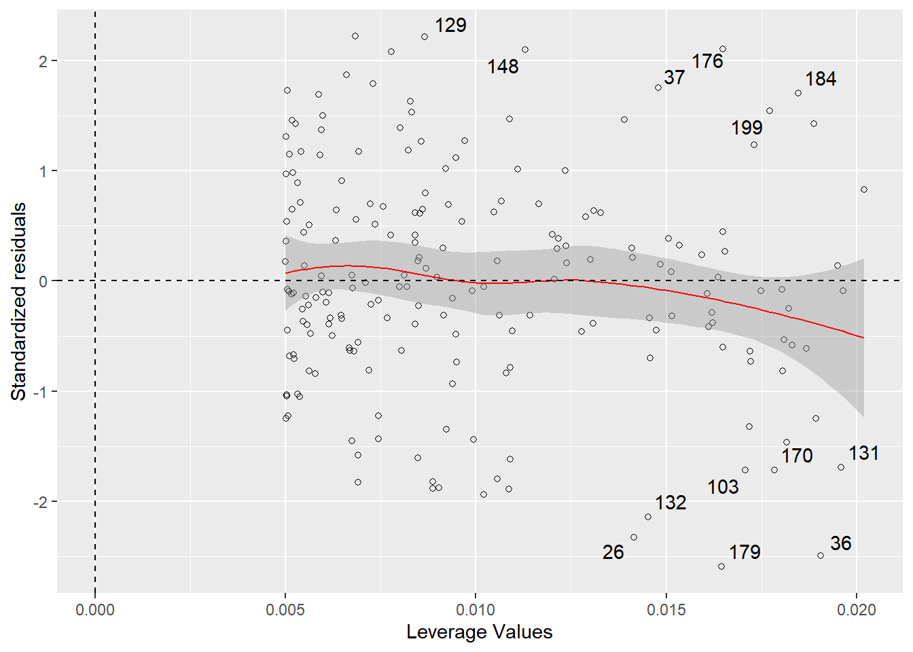
12.3.6 Cook‘s距离和杠杆值
Show the code
plot(lm_tv$fit,6) 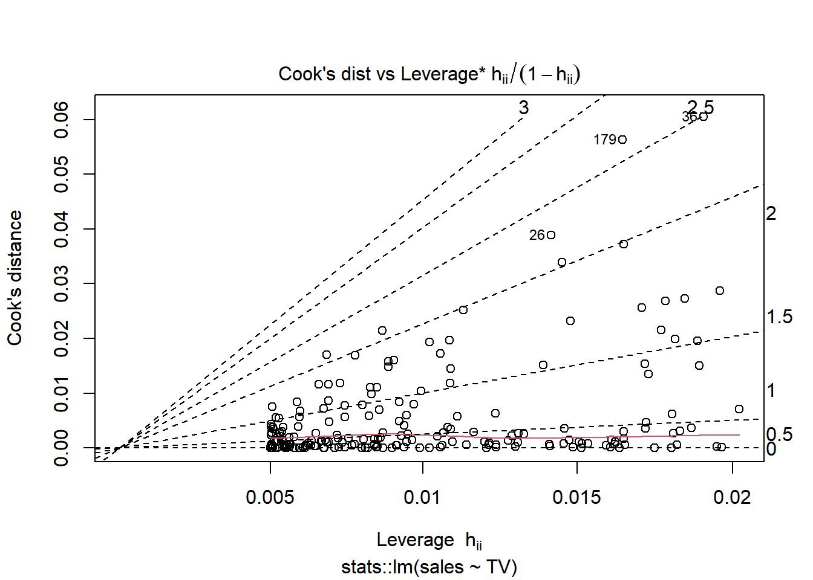